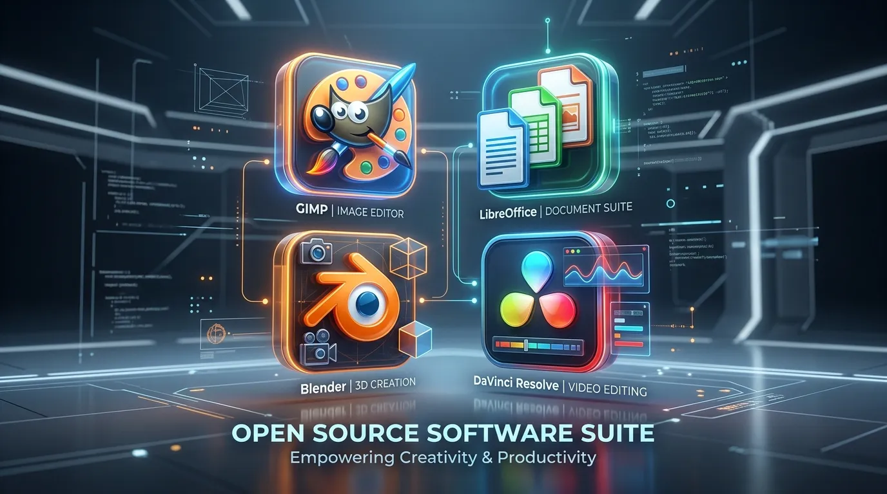
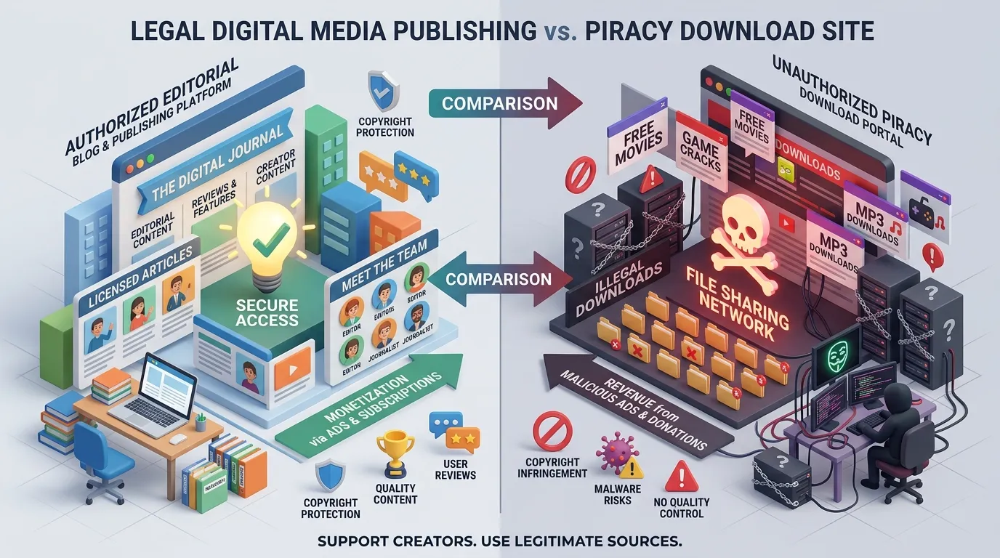

Crackstube Alternatives: What Crackstube Means, the Risks, and Safer Options
If you searched for Crackstube, you may have noticed something unusual: the name does not point to one simple type of website.

If you searched for Crackstube, you may have noticed something unusual: the name does not point to one simple type of website.
Depending on where you encounter it, Crackstube can be associated with a digital publishing website, technology and internet-related content, or websites offering unauthorized software and media. That overlap is a major reason the keyword can be confusing in search results.
There is also a Crackstube.com publishing identity. Current third-party web data describes the domain as a digital media platform publishing articles across areas such as Technology, Finance, Education and Business, while also highlighting guest-posting opportunities. The domain has HTTPS enabled and has a registration record dating back to October 2015.
At the same time, the word "Crackstube" is widely used online in connection with cracked software, unauthorized downloads and piracy-related content. The competitor article you provided makes the same distinction between the publishing platform and unofficial Crackstube-style sites.
That means the smartest way to evaluate Crackstube alternatives is to first identify what you actually want to replace.
Are you looking for:
- A safe place to download software?
- A legal alternative to pirated applications?
- A streaming service?
- A technology information website?
- A guest-posting or publishing platform?
- A general website explaining digital topics?
The answer changes the best alternative.
This guide explains the different meanings of Crackstube, the risks associated with unauthorized platforms, and practical alternatives that are safer and more appropriate for different needs.
What Is Crackstube?
Crackstube is an ambiguous online term rather than a name that can always be assigned to one single service.
One important distinction is between Crackstube.com as a publishing/media website and unofficial websites that use similar terminology to attract people searching for free or cracked digital content.
Current web information identifies crackstube.com with a title describing it as a digital media platform with guest-posting opportunities. Its indexed description says it publishes articles covering Technology, Finance, Education, Business and other subjects and welcomes quality guest posts.
The domain itself also has a relatively long registration history, with available WHOIS data showing October 19, 2015 as the registration date.
That is quite different from the meaning attached to "Crackstube" on piracy-oriented websites.
Why the Confusion Exists
The word "crack" has a very specific meaning in software discussions. A software crack generally refers to a modification or method intended to bypass a licensing, activation or copy-protection mechanism.
"Tube," meanwhile, is commonly used in names associated with video and media websites.
Put the words together and it is easy to see why the term can attract searches involving free software, videos or other digital content.
But a domain name does not tell you what a website actually does. That is why checking the exact domain, page purpose and content is more useful than judging a website purely from the keyword.
Crackstube.com vs. Unofficial Crackstube-Style Websites
This is the most important distinction to understand.
| Factor | Crackstube.com publishing identity | Unofficial Crackstube-style sites |
|---|---|---|
| Main purpose | Digital publishing/content | Often unauthorized downloads or media |
| Typical content | Articles and informational material | Cracked software, games, media or links |
| Guest publishing | Publicly associated with guest posts | Not necessarily |
| Main user activity | Reading content | Downloading or accessing content |
| Security concerns | Should be evaluated as a normal website | Can be significantly higher |
| Copyright concerns | Depends on individual content | Can involve unauthorized distribution |
| Best approach | Evaluate the individual site/article | Prefer legal alternatives |
The competitor article also emphasizes that these two meanings should not be treated as the same thing.
That distinction is particularly important when someone searches for Crackstube alternatives. If you're looking for an alternative to a publishing platform, your options will be completely different from the alternatives you need if you're trying to replace a cracked-software website.
Why Do People Search for Crackstube?
There isn't one reason.
Some people encounter the term while researching websites or online platforms. Others may be looking for free versions of software or media.
There is also a broader reason: digital subscriptions have become common. Software, entertainment platforms, productivity tools and creative applications can cost money, and users naturally search for free alternatives when a subscription doesn't fit their budget.
That demand creates a large market for legitimate free software as well as unauthorized copies. The problem is that the two are not equivalent.
A free and open-source application gives you software under a legitimate license. A cracked application generally attempts to bypass the normal licensing mechanism. Those are very different things even though both may appear in searches for "free software."
What Are Crackstube Alternatives?
The phrase Crackstube alternatives can mean several things.
If your goal is to replace cracked software, the best alternatives are legal free software, open-source applications, official free tiers, trials and discounted plans.
If you're looking for movies or TV shows, legal streaming services are the better option.
If you're looking for a technology publication, use established technology websites or reputable specialist resources.
If you're looking for guest blogging, evaluate legitimate publishing websites based on editorial standards, audience relevance and current submission policies.
In other words, there isn't one universal Crackstube alternative. There is a better alternative for each use case.

Best Crackstube Alternatives for Software
If the reason you're searching for Crackstube is to find free software, you don't necessarily need a cracked version. There are thousands of legitimate applications that are free to use.
1. GIMP
GIMP, short for GNU Image Manipulation Program, is one of the best-known free alternatives for image editing. It can handle many tasks that people traditionally associate with commercial image-editing software, including photo editing, image retouching, graphic design, layer-based editing, image composition, and digital artwork.
The major advantage is simple: you don't need to bypass a commercial license to use it.
2. LibreOffice
For documents, spreadsheets and presentations, LibreOffice is a strong open-source option. It includes applications for word processing, spreadsheets, presentations, database work, mathematical formulas, and drawing.
For students, freelancers and small businesses that don't require every feature of a commercial office suite, LibreOffice can be a practical alternative.
3. Blender
If you're interested in 3D graphics, animation or visual effects, Blender is another major open-source option. It supports workflows involving 3D modeling, animation, rendering, simulation, video editing, and visual effects.
Instead of searching for a cracked version of expensive 3D software, users can explore Blender legitimately.
4. DaVinci Resolve
For video editing, DaVinci Resolve offers a legitimate free version with a substantial feature set. It is particularly well known for combining video editing with professional color-grading and post-production tools.
For creators who are just starting out, a legitimate free edition is considerably more sensible than downloading an unknown modified installer.
5. Official Free Tiers
Another alternative that people often overlook is the free plan. Many software companies offer limited free versions of their products. The free plan may restrict storage, number of users, export options, advanced features, or usage limits.
But the important difference is that the software remains legitimate and supported. For many users, that is enough.
Crackstube Alternatives for Movies and TV
If your search is related to unauthorized movie or television streaming, there are also legitimate alternatives. Depending on your country, availability can vary, but the broader options include:
Free ad-supported streaming
Some services provide licensed movies and television content supported by advertising. Examples include services such as Tubi, Pluto TV, The Roku Channel, and Freevee, where available.
Subscription streaming
For people who watch regularly, paid platforms can provide more stable access to licensed content. Examples include Netflix, Prime Video, Disney+, Hulu, and Max, where available.
Official broadcaster platforms
Don't forget local broadcasters. Many television networks and media companies offer free or ad-supported websites and apps containing licensed programming. This can be one of the simplest alternatives to questionable streaming sites.
Crackstube Alternatives for Music
The same principle applies to music. Instead of relying on unauthorized downloads, users can choose legitimate platforms such as Spotify, YouTube Music, Apple Music, Amazon Music, and Bandcamp.
Free tiers are available on some services, while others use subscriptions. For independent artists, Bandcamp can be particularly useful because it connects listeners directly with musicians and labels.
Crackstube Alternatives for Productivity
If you're looking for cracked productivity software, first check whether an open-source or browser-based alternative exists.
For example:
| Need | Legal Alternative |
|---|---|
| Documents | LibreOffice |
| Spreadsheets | LibreOffice Calc |
| Graphic editing | GIMP |
| 3D creation | Blender |
| Video editing | DaVinci Resolve |
| Notes | Joplin / other reputable free tools |
| Project management | Free-tier SaaS products |
| Cloud documents | Google Docs / Microsoft 365 web apps |
The point isn't that one alternative will perfectly replace every premium application. It's that you often don't need a cracked copy to accomplish the underlying task.
Why Are Cracked Software Websites Risky?
This is where the Crackstube keyword becomes more serious.
The apparent advantage of cracked software is obvious: You don't pay for the license. The hidden cost can be much harder to see.
Research on cracked Android applications has found that third-party cracked apps can request more dangerous permissions and exhibit more suspicious behavior than official versions. Security researchers and industry security teams have also repeatedly warned about malware associated with pirated software.
Potential threats include:
- Malware
- Credential theft
- Ransomware
- Spyware
- Cryptominers
- Backdoors
- Browser hijacking
- Unwanted applications
The risk isn't theoretical. A modified installer gives an attacker an opportunity to place something inside the program before you ever run it.
The Antivirus Problem
One particularly bad sign is when installation instructions tell users to disable antivirus software.
Think about that for a second.
You're downloading software from a source you don't fully trust, and the installation instructions tell you to turn off the tool designed to protect your computer. That's not a good trade.
If legitimate software is being detected as malicious, investigate the detection and obtain the application from its official developer. Don't automatically assume the security software is the problem.
Cracked Software May Not Receive Updates
There's another issue beyond malware.
Commercial software receives security patches, bug fixes and compatibility updates. A cracked version may interfere with those updates because the update process can restore the original licensing mechanism. That can leave users running an outdated application with known vulnerabilities.
So even if a cracked copy appears to work today, that doesn't mean it is a good long-term solution.
Privacy Risks of Unofficial Download Sites
Security isn't the only concern.
Some unofficial websites use aggressive advertising, redirects, fake download buttons and browser notification prompts.
A user may think they're clicking "Download," but actually click "Allow notifications" or be redirected through multiple advertising pages.
Once browser notification permissions are granted, unwanted notifications can continue appearing even after the original tab has been closed.
The safer approach is simple: Don't grant permissions to websites unless you understand why they need them.
Can Crackstube-Style Websites Create Legal Problems?
Potentially, yes.
Copyright law varies by country, and the precise legal consequences depend on what content is being accessed, copied, distributed or shared.
Software licensing is also important. If a paid application is modified to bypass its activation or license restrictions, that can violate the software's terms and potentially applicable copyright or anti-circumvention laws.
For businesses, the issue becomes even more serious. Using unlicensed software on company devices can create compliance problems, security exposure, licensing disputes, data-protection concerns, operational problems, and reputational damage.
A company saving money on one software license is not necessarily saving money if the resulting malware infection compromises customer information.
How to Recognize a Risky Crackstube-Style Website
You don't need to be a cybersecurity expert to notice warning signs. Look for patterns such as:
- "Disable your antivirus" — This is one of the biggest red flags.
- Multiple fake download buttons — If a page has five buttons that all say "Download," be careful.
- Forced browser notifications — A legitimate download usually doesn't need permission to send browser notifications.
- Excessive redirects — If clicking one link sends you through several unrelated domains, stop.
- Unknown executable files — Be especially cautious with unexpected .exe, .msi, .bat, .scr or similar files.
- Password-protected archives from unknown sources — Don't assume a password-protected ZIP is automatically safe.
- No clear publisher information — If you cannot determine who created or maintains the software, that's another warning sign.
- "Premium for free" claims — If a website promises expensive software completely free with every premium feature unlocked, ask why.
What If You Already Downloaded Something Suspicious?
Don't panic. But don't ignore it either.
If you've downloaded a suspicious file:
- Don't run it.
- Delete it if you don't need it.
- Run a reputable security scan.
- Check recently installed applications.
- Review browser extensions.
- Check browser notification permissions.
- Change important passwords if you suspect credentials may have been exposed.
If the device is showing unusual behavior, disconnect it from sensitive networks and seek professional assistance. If you already executed a suspicious installer, the situation deserves more attention than simply deleting the file. For a work computer, contact your organization's IT or security team rather than trying random "virus removal" tools from the internet.

Is Crackstube.com the Same as a Piracy Website?
Not necessarily. This is one of the most important points from the current search landscape.
Current third-party indexing identifies Crackstube.com with a digital-media publishing description focused on Technology, Finance, Education, Business and guest posting. The competitor article you supplied similarly describes a publishing version of CracksTube.com separately from unofficial websites associated with cracked content.
At the same time, other websites use the word "Crackstube" in connection with piracy or unauthorized content. Therefore, don't assume that every page containing the word "Crackstube" refers to the same service. Always check the exact domain. That single habit can prevent a lot of confusion.
Crackstube as a Digital Publishing Entity
There is another side of the keyword that is easy to overlook.
The current crackstube.com identity is associated with digital publishing and guest posting. Third-party technical data identifies its page title as: "Crackstube - Leading Digital Media Platform with Guest Posting Opportunities."
Its description references expert articles in Technology, Finance, Education, Business and other categories and welcomes quality guest posts.
That means someone searching for Crackstube alternatives because they want another publishing or guest-posting website has a completely different search intent from someone looking for a cracked software alternative.
Alternatives for Digital Publishing and Guest Blogging
If your actual goal is publishing content, don't search for "cracked" alternatives at all.
Instead, look for reputable publishing opportunities based on industry relevance, real readership, editorial quality, author transparency, content standards, organic traffic, appropriate outbound links, and clear contributor guidelines.
For technology, business and marketing writers, relevant industry publications and established communities can often provide more meaningful exposure than a random multi-topic website.
How to Choose the Right Crackstube Alternative
Instead of choosing an alternative because it appears first in Google, ask what you actually need.
If You Need Free Software
Choose open-source software, official free editions, free plans, educational licenses, trials, or discounted legitimate licenses.
If You Need Movies
Choose licensed streaming platforms, official broadcaster apps, free ad-supported services, or library/educational services where available.
If You Need Music
Choose licensed music platforms, official artist pages, legal downloads, or free streaming tiers.
If You Need Publishing Opportunities
Choose relevant industry publications, established blogs, editorial websites, professional communities, or reputable guest-post platforms.
If You Need Technology Information
Choose official documentation, reputable technology publications, vendor knowledge bases, university resources, or specialist communities.
Crackstube Alternatives: Quick Comparison
| Your Goal | Better Alternative | Why |
|---|---|---|
| Image editing | GIMP | Free and open source |
| Office documents | LibreOffice | Free office suite |
| 3D design | Blender | Powerful open-source tool |
| Video editing | DaVinci Resolve | Legitimate free version |
| Movies | Licensed streaming services | Legal and safer |
| Music | Spotify / YouTube Music / Apple Music | Licensed access |
| Technology research | Official documentation | Primary information |
| Guest blogging | Relevant editorial websites | Better audience alignment |
| Business research | Specialist publications | Greater topical depth |
Why Legal Alternatives Are Usually Better
At first glance, a cracked version seems cheaper. But price isn't the only cost.
Consider the complete equation: Software cost + security risk + lost data + downtime + legal exposure + lack of support.
A legitimate free alternative may actually be cheaper in the long run. For example, an open-source image editor might not have every feature of an expensive commercial application, but if it safely handles 90% of your workload, there's little reason to take unnecessary risks with a modified installer.
Pros and Cons of Crackstube-Style Options
| Potential Appeal | Major Concern |
|---|---|
| Free access appears attractive | Malware risk |
| Large selection of content | Copyright concerns |
| Premium features may appear unlocked | No reliable support |
| Easy downloads | Fake installers |
| No subscription | Privacy risks |
| Quick access | Broken or outdated software |
The competitor article you provided reaches a similar conclusion: the attraction of unofficial platforms is usually free access, while the major downside is the combination of security, privacy and copyright risk.
Frequently Asked Questions About Crackstube
Crackstube is an ambiguous term used in different online contexts. It can refer to a digital publishing identity associated with Crackstube.com, while other uses of the term relate to unauthorized software, media or streaming websites.
Current third-party web data identifies Crackstube.com as a digital media platform publishing content across Technology, Finance, Education, Business and other subjects, with guest-posting opportunities.
Not necessarily. The keyword is used for different types of websites, so the exact domain must be checked before drawing conclusions.
They can carry significant security risks, particularly when software is modified or downloaded from an untrusted source. Research has found potentially more dangerous permissions and behavior in some cracked applications compared with official versions.
For legitimate free software, options include GIMP for image editing, LibreOffice for office work, Blender for 3D creation and DaVinci Resolve for video editing.
Use licensed streaming services, official broadcaster platforms and legitimate free ad-supported services available in your region.
Yes. Modified software can be used to distribute malicious code, including credential stealers, spyware, ransomware and other unwanted programs.
The legal position depends on the country and circumstances, but unauthorized copying, distribution or circumvention of software licensing and copyright protections can create legal problems.
Common reasons include avoiding subscription costs, accessing expensive applications without paying, regional availability and curiosity. None of those reasons remove the associated security or licensing risks.
Don't run the file. Delete it if appropriate, perform a security scan, review recently installed applications and browser extensions, and change important credentials if you believe they may have been exposed.
No. Free software can be legitimately distributed at no monetary cost. Cracked software generally refers to software modified to bypass licensing or activation restrictions. Those are fundamentally different concepts.
There isn't one universal answer. The safest alternative depends on your goal. For software, use legitimate free or open-source applications. For entertainment, use licensed streaming services. For publishing, use reputable and relevant editorial websites.
Final Verdict: What Is the Best Crackstube Alternative?
The answer depends on what brought you to the keyword in the first place.
If you were searching for free software, don't assume that a cracked copy is your only option. GIMP, LibreOffice, Blender, DaVinci Resolve, official free tiers and open-source projects can solve many of the same problems without the security and licensing concerns.
If you're looking for movies, TV or music, licensed streaming services and official platforms provide a much safer route.
If you're looking for technology information or digital publishing, look at the exact website behind the Crackstube name. Current web data associates Crackstube.com with a digital-media and guest-posting identity, which is distinctly different from piracy-oriented websites.
And if you encountered Crackstube while searching for a website offering unauthorized downloads, the safest alternative is not another clone of the same model. It's a legitimate service that gives you what you need without making you trade a small saving for a potentially much bigger problem.
The biggest lesson is simple: Don't choose an alternative based only on the word "free." Choose it based on what it does, who provides it, whether you can trust the source, and whether you have the right to use the content or software. That approach will serve you far better than chasing one Crackstube mirror after another.
Enjoyed this Technology guide?
Explore more Tech articles or submit your own guest contribution on CracksTube.